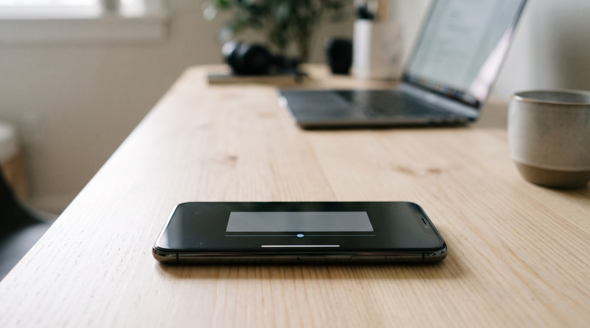
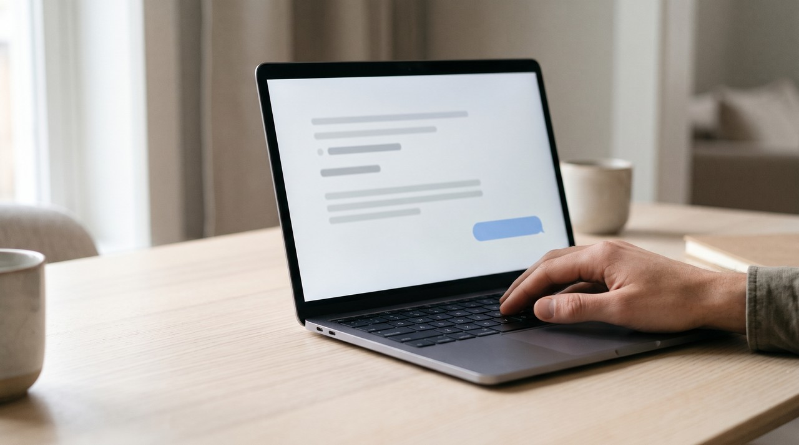

Can I clip someone else's YouTube video? The four cases
You can only clip it if the owner says yes. YouTube's copyright page states that the owner decides who else is allowed to use their video, so you need a written yes, a public clip policy from the channel, or a Creative Commons licence on the video. Crediting the creator or keeping the clip short does not take the place of permission. If you do not have permission, just share a timestamp link instead.
Suppose you spot a good moment in someone else's YouTube video, maybe a podcast answer or a stream highlight, and you want to cut it out for your own channel or TikTok. Before you even pick a tool, you have to know if you are allowed to use it. That comes down to one thing: what the owner of the video has allowed.
Because I build a desktop app that cuts long videos into shorts, this is the first thing I want anyone using it to sort out before they start. I checked all the rules below on YouTube's help pages on 23 November 2026. This is not legal advice, so if real money is involved, you should ask a lawyer in your country.
Who decides whether you can clip a video?
The owner decides. On YouTube's copyright page, YouTube explains that copyright owners hold the legal right to use and distribute their content, and they choose who else can use it too. That means the length of your clip does not decide whether it is okay. What matters is what the owner allows, and that breaks down into four cases.
| What the owner has said | Can you clip it? | What to keep |
|---|---|---|
| A written yes to you, by email or message | Yes, inside what they allowed | The message, saved with its date |
| A clip policy the channel published, or a campaign's rules page | Yes, inside those rules | A copy of the page and the date you read it |
| A Creative Commons licence on the video | Yes, with credit to the creator | A screenshot of the licence line under the video |
| Nothing at all | No download and repost, only YouTube's own share tools | Nothing to keep |
The third case is easy to overlook. A creator can publish a video under the Creative Commons Attribution licence (CC BY), and according to YouTube's licence page, other creators can reuse that video as long as they follow the licence terms, which include crediting the creator. You can check this by opening the video's description and looking at the licence line. Most videos use the Standard YouTube licence, which gives you no right to reuse the video.
Does giving credit or using a few seconds make it okay?
No, and YouTube is clear about this. Its fair use page says that giving credit by itself does not make a copy fair use, and adding a note like no infringement intended will not stop a claim. Fair use is the legal idea that certain uses, like criticism or news reporting, do not require permission, and courts judge it one case at a time. You cannot just claim fair use in your caption and expect it to hold.
Keeping a clip short does not protect you either. That same page explains that a Content ID claim, which happens when YouTube's system automatically matches your upload to the owner's reference copy, can stop you from monetizing a video even if you only used a few seconds. According to YouTube's page on copyright claims, the owner's settings decide what happens next: the claim can block your video, run the owner's ads on it, or simply track the views.
A copyright strike is much more serious, because it happens when the owner files a removal request directly instead of relying on an automatic match. On the first strike, YouTube removes the video, and if a channel gets 3 strikes, it can be terminated. A strike goes away after 90 days if you finish YouTube's Copyright School. Taking that kind of risk for one clip is rarely worth it.
What can you do when you have no permission?

If you just want to show people a specific moment, YouTube's own tools let you do that for free. Under the share button, there is a share at timestamp option that creates a link opening the original video at the exact second you picked. The original creator still gets the view, and you stay within the rules.
YouTube also used to give viewers a Clip button that let you cut 5 to 60 seconds and play it straight from the original video. On 17 April 2026, 9to5Google reported that YouTube is removing the option to make new clips, though older clips can still be watched. When I checked YouTube's Clips help page on 23 November 2026, the button was still listed there, so if it is missing on your screen, that change is probably why.
Another built in option is Remix, which lets you pull part of a video into your own Short. YouTube's remix page notes that these Shorts link back to the original video, and videos allow remixing by default unless the creator restricts it. If you do not see the Remix button on a video, the creator turned it off, so you have your answer.
These free options only work inside YouTube. None of them hand you a video file that you can download and upload to TikTok or Instagram. YouTube's Terms of Service tie downloading and reuse to permission, from YouTube and, where it applies, from the rights holder. So if you want to post a clip on another platform, you still have to ask the owner.
How do you ask for permission, and what should you keep?

Send your request in writing somewhere the creator actually checks, like the business email on their channel page or a direct message. Keep your message brief and clear, because a vague request usually gets a vague reply. Tell them which video you want to use, what you plan to make, where you will post it, and whether the clips will make money.
A short note like this works fine: "Hi, I would like to cut short vertical clips from your video, with its title and link here, and post them on my TikTok and YouTube channels with your name in the caption. They would carry my own captions and commentary. Is that okay with you, and is there anything you do not want clipped?" Just adjust it so it sounds like you.
Once they reply, save the message with the date, both as a screenshot and as the original text. A quick voice call or a thumbs up on a comment is difficult to prove if an issue comes up later. Some channels and streamers post their clip rules on their own page, and paid clipping campaigns usually include a rules page too, so read all of it and save a copy the day you begin. I covered the daily routine of this work in how to start clipping.
Game streams add one more thing to watch out for. A streamer can allow you to use their voice, their face and their commentary, but the game footage itself belongs to the game's publisher, so the streamer cannot give you rights to that part. You need to check the publisher's video policy too.
Does permission mean your clips can earn money?
No, and this catches a lot of people off guard even when they followed the copyright rules. YouTube's channel monetization policies include a rule on reused content for channels that repost material from other places without adding enough of their own work. In that section, YouTube states: "This policy applies even if you have permission from the original creator."
Permission takes care of copyright, while your own added work takes care of ads. That same page lists what passes, such as clips in a critical review or a reaction video with your commentary, and what fails, such as moments from a show edited together with little or no narrative. A clip with only a crop and captions is still someone else's video. Add your voice, your opinion, or the context that explains why the moment matters.
How do you cut the clip once you have a yes?
You can use any video editor for this, even the free one already on your phone. I use my own app, VideoDoc, because its Video to shorts tab finds possible clips for me. You load a video file or a public YouTube link, and it lists the strongest parts with 1 to 5 dots and a plain reason next to each one.
From there, you trim the clip on a timeline, choose how the tall frame tracks the speaker, check the word by word captions once, and export at 1080x1920. The work happens on your own computer and the video is not uploaded anywhere. The free version, Lite, handles videos up to 20 minutes and adds a small "Made with VideoDoc" mark to each clip, while Pro removes both of those limits. You can read the full steps in how to clip YouTube videos for TikTok.
I am not a lawyer, and nothing on this page is legal advice. Copyright rules vary by country, and fair use is specifically a United States legal concept that courts decide case by case. VideoDoc does not check who owns a video and it does not ask for permission on your behalf, so that part stays with you. The app runs on Windows and Apple Silicon Macs, not on phones, and I cannot predict how any clip will perform.
Find the best parts of a long video on your own computer.
Lite is free for videos up to 20 minutes, and the details are on the Video to shorts page. Pro is a one time payment. GTA 6 week: the Pro button below adds code GTA6, which takes 50% off for the first 100 buyers.
Quick questions
Can I clip a YouTube video if I give credit?
No. YouTube's fair use page states that crediting the creator by itself does not make a copy fair use. You still need the owner's permission, a clip policy they published, or a Creative Commons licence on the video.
How long can a clip be without permission?
There is no safe length. YouTube says a claim can hit a video even when you only used a few seconds. Clip length is one factor a court looks at in a fair use case, so it is not a rule you can rely on.
Is the YouTube Clip button still there?
On 17 April 2026, 9to5Google reported that YouTube is removing the ability to create new clips, while older clips remain viewable. Sharing a timestamp link does a similar job for free.
Tonight, open the video you want to clip and check both its licence line and the channel's about page. If neither one gives you a clear yes, send the creator a short message and wait for them to reply.

I am a telecom engineer and business analyst from Pakistan, and I build small honest desktop tools under Designesh. I made VideoDoc because I wanted my AI to read the lectures I study from. Everything here is tested on my own machine first.